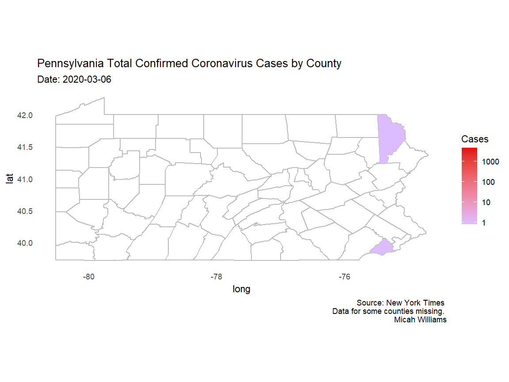

Description: Animated and static graphs to visualize the spread of the novel coronavirus in the United States.
Technologies: R, tidyverse, gganimate.
Sources: The New York Times, US Census
Created: April 2020
This map shows the total number of infections in the mainland United States with the most recent data available at the time of rendering, April 6. The top 10 counties by total cases on April 6th were:
This plot shows total infections in the top 10 counties on a linear scale from March 7 to April 7. Six of the top ten counties are in or near New York City. Other counties in the top ten contain or are near major US cities such as Chicago, Los Angeles, Detroit, and Miami. Download this image
This choropleth shows the spread of coronavirus across the state of Pennsylvania. Each frame represents one day, starting from the day of the first infection in the state, March 6, until the most recent data available at the time of rendering, April 6. The state has not been hit particularly hard by the COVID-19 pandemic, but this animation shows the speed with which the virus spreads, and why it is so hard to contain without a cure or vaccine: within only a few weeks of the first case, many thousands of infections were present spread across nearly all of Pennsylvania's counties.
Note the color scale: since the scale is logarithmic, the dark red represents over 1,000 times as many infections as the light purple. Download this image
This plot shows the relationship between number of confirmed cases per county and the average rate of new infections per day, calculated as the average rate of new infections from April 3-6. Counties colored red are significant outliers: their rates of new infection are high compared to counties with similar numbers of confirmed cases. The 37 highlighted points represent the top 3% of all US counties when compared for their number of cases and average daily rate of new infections.
In essence, this plot shows counties where coronavirus appears to be spreading faster than it should be when compared to counties with similar numbers of infections. While a likely reason for this effect is that COVID-19 is spreading faster than in peer counties, it could also be the result of testing or reporting.
The 37 counties in the top 3% belong to 17 different states, however the majority are in just 8 states:
Early data shows that in cities with high racial diversity, there are serious disparities in fatality rates. As the New York Times reported, "about 70 percent of the people who have died [in Louisiana] are black, though only a third of that state’s population is." In an article on April 7, the Detroit Metro Times reported that in addition to Detroit's COVID-19 death rate (32.9 per 100,000) being more than 55% higher than that of New York City, "[black people] make up 13.6% of the state’s residents but more than 40% of the fatalities."
Even after the dust is settled on this pandemic, it will be important to keep these facts in mind, and to explore them to the full extent that is necessary when dealing with issues of life and death. What can we do to address these disparities? How can we ensure that when the next emergency arrives, we will be prepared to remedy it equitably?
{kind=link}
{kind=link}
{kind=link}
{kind=link}